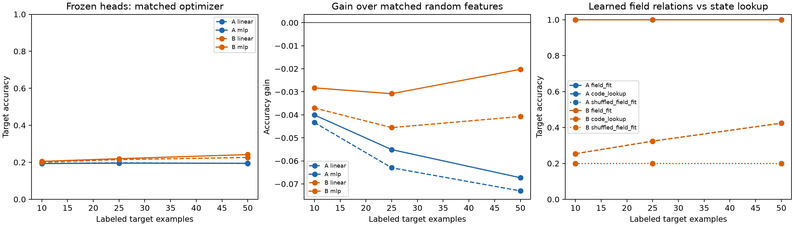

使用原 72 个有限域源模型，保持源权重和目标标签划分不变。线性与小 MLP 读出都冻结编码器，训练 200 步，分别报告学习率 0.01、0.03；主对照固定为 25 标签、学习率 0.01。每种读出都有匹配的随机特征基线。
原 PermWorld 正确输入变换的最终层 CKA 确实在 24/24 个单元上增加。CKA 原始数据核验。本页的有限域读出试验不复现那项 Transformer 输入变换对照，也不否定它。

| 组 | 冻结读出 | 准确率 | 随机特征基线 | 迁移收益 |
|---|---|---|---|---|
| A | linear | 19.73% | 26.03% | -6.30 pp |
| A | mlp | 19.54% | 25.05% | -5.51 pp |
| B | linear | 21.47% | 26.03% | -4.55 pp |
| B | mlp | 21.97% | 25.05% | -3.08 pp |
第二类诊断先读取四个已训练源任务的输出值，再只用目标支持标签求解有限域仿射系数。拟合过程不接收真实目标公式。它额外假设目标属于这个代数函数族，因此使用了特权结构先验，不能解释成普通神经训练自发学会了组合。
| 组 | 源答案读出 | 准确率 | 支持标签可精确拟合比例 |
|---|---|---|---|
| A | field_fit | 100.00% | 100.0% |
| A | shuffled_field_fit | 20.00% | 0.0% |
| A | code_lookup | 32.40% | 100.0% |
| B | field_fit | 100.00% | 100.0% |
| B | shuffled_field_fit | 20.00% | 0.0% |
| B | code_lookup | 32.40% | 100.0% |
查表仅在支持集出现相同完整源答案组合时复用标签，否则输出支持集多数类；它量化潜在状态重复。打乱源答案行顺序保持源答案联合分布不变，但破坏与目标的对应；无法拟合时同样使用多数类。
这些是观察初始负迁移后的探索诊断。源训练覆盖全部输入，因此这里只能讨论同实体的新任务标签迁移。所有方法和学习率完整报告，不按目标测试准确率挑选参数或最佳方法。